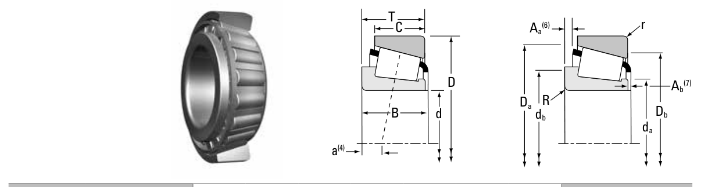

Original catalogue drawing - Timken TRB Catalog, page 412

Scanned from the manufacturer catalogue page listing this part number. All part numbers printed on that table share the same drawing.
Scale cross-section
Blue = inner / outer ring, yellow = rolling element. Drawn to scale from this part's own
dimensions for selection reference only - not a manufacturing or assembly drawing.
Dimension table (mm / inch)
Symbol
Dimension
mm
inch
d
Bore diameter
80
3.1496
D
Outside diameter
140
5.5118
B
Inner-ring / bearing width
26
1.0236
T
Overall assembly width
28.25
1.1122
C
Cup / outer-ring width
22
0.8661
r
Chamfer (min)
2
0.0787
Notes
Weights are given in kg. Load ratings are shown in both the original catalogue units and the converted value (1 N = 0.2248 lbf). Data is provided for selection reference only - confirm against the latest official catalogue before ordering.
Main dimensions
Bore d (mm)
80.000
Bore d (in)
3.1496
Outside dia. D (mm)
140.000
Outside dia. D (in)
5.5118
Width B (mm)
26.000
Overall width T (mm)
28.250
Overall width T (in)
1.1122
Cup width C (mm)
22.000
Load ratings & speeds
Basic dynamic load rating Cr (lbs)
36800
Basic static load rating Cor (lbs)
42000
Basic dynamic load rating Cr (N)
164000
Basic static load rating C0r (N)
187000
Dynamic rating C1 (N, ISO)
164000
Dynamic rating C1 (lbf, ISO)
36800
Radial rating C90 (N)
42400
Radial rating C90 (lbf)
9530
Thrust rating Ca90 (N)
30500
Thrust rating Ca90 (lbf)
6860
Static rating C0 (N)
187000
Static rating C0 (lbf)
42000
Factor e
0.42
Factor Y
1.43
Factor K
1.39
Geometry factor G1
80.7
Geometry factor G2
28.4
Geometry factor Cg
0.0771
Effective load centre a (mm)
0.0
Weight
Weight (kg)
1.63
Mounting dimensions (fillets / shoulders)
Shaft fillet R max (mm)
2.5
Housing fillet r max (mm)
2.0
Shaft shoulder da (mm)
89.0
Shaft shoulder db (mm)
93.0
Housing shoulder Da (mm)
133.0
Housing shoulder Db (mm)
127.0
Cage projection Aa (mm)
1.8
Cage projection Ab (mm)
3.6
Bearing life (ISO 281 basic rating life)
C / P
Equivalent load P (N)
L10 (106 rev)
L10h at 500 rpm
4
41,000
102
3,386
6
27,333
392
13,083
8
20,500
1,024
34,133
10
16,400
2,154
71,814
15
10,933
8,323
277,449
Basic rating life per ISO 281: L10 = (C/P)10/3 with C = 164,000 N. Hours = L10 x 106 / (60n). Life-modification factors for lubrication, contamination and temperature (aISO) are not included.
Source & traceability
Brand
Timken
Source catalogue
Timken Tapered Roller Bearing Catalog (2016)
Catalogue page
p.412 (dimensions)
Series type
TS
ISO dynamic rating C1, Timken C90 / Ca90, static rating C0, geometry factors and assembly weight.
Send us the quantity you need and we will come back with price and
lead time, normally within 24 hours. Equivalent parts from other brands can be quoted at the same time.